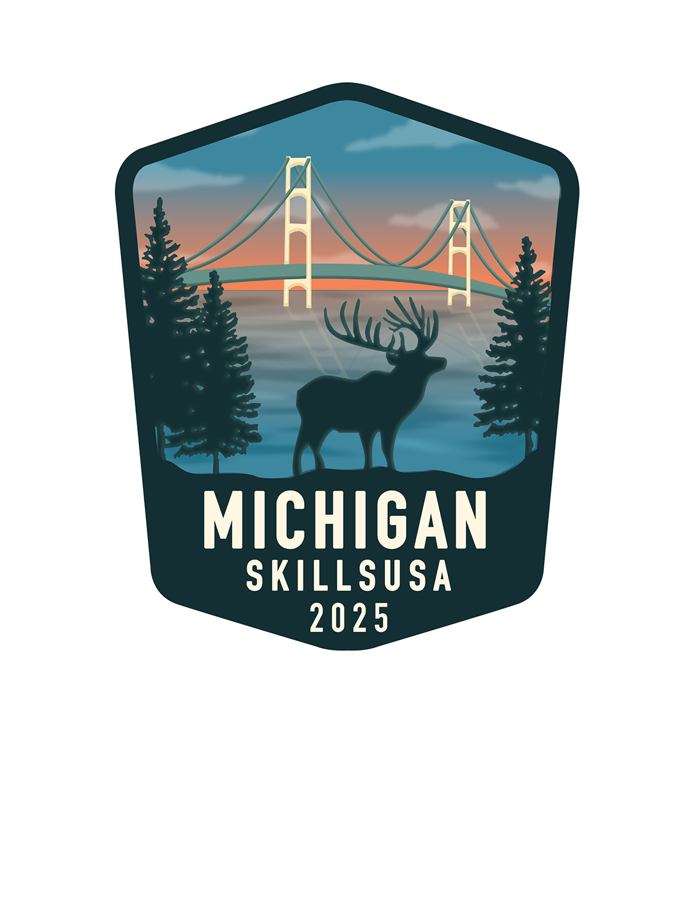

Sophia bilello - digital media & design final
Best of gallery
These are my absoloute Favorite pieces that i have created through out this year!!
Propaganda Poster

This is my absolute favorite thing I’ve ever made! As a huge fan of Top Gun, I was immediately inspired when we got the prompt to create a propaganda-style poster based on a movie or game. I knew exactly what I wanted to do. I featured the iconic quote “I feel the need... the need for speed” as the central message. Two fighter jets are positioned in a wingman formation to reflect the theme of camaraderie and precision. I added an old paper texture to give the poster a vintage, military-inspired aesthetic, and used red, white, and blue to channel a strong patriotic, all-American vibe. The motorcycle and goose silhouette represent the bond between Maverick and Goose—two central characters whose friendship defines the heart of the film. Finally, I included the Top Gun logo as a finishing touch to tie everything together.
Sharks

These are my sharks! This piece was created for an assignment focused on exploring positive and negative space. I chose sharks because they’re my favorite animal, and I felt their bold shapes would lend themselves well to creating strong visual contrast—which I think I accomplished successfully. By playing with silhouette and space, I was able to highlight the form of the sharks while letting the negative space define their movement and energy. It was a fun challenge, and I’m really proud of how it turned out.
skillsusa pin design

This is my SkillsUSA Pin Design, created for the competition prompt to represent Michigan through our own perspective. I chose to include an elk, the state tree (Eastern White Pine), and the Mackinac Bridge to symbolize key aspects of Michigan’s identity. I also incorporated water to represent the Great Lakes, as Michigan is known as the Great Lakes State. The overall shape and composition were inspired by national park badges, giving the design a natural, adventurous feel that reflects Michigan’s outdoor beauty. I’m proud to share that this design placed 1st regionally and 3rd at the state level!